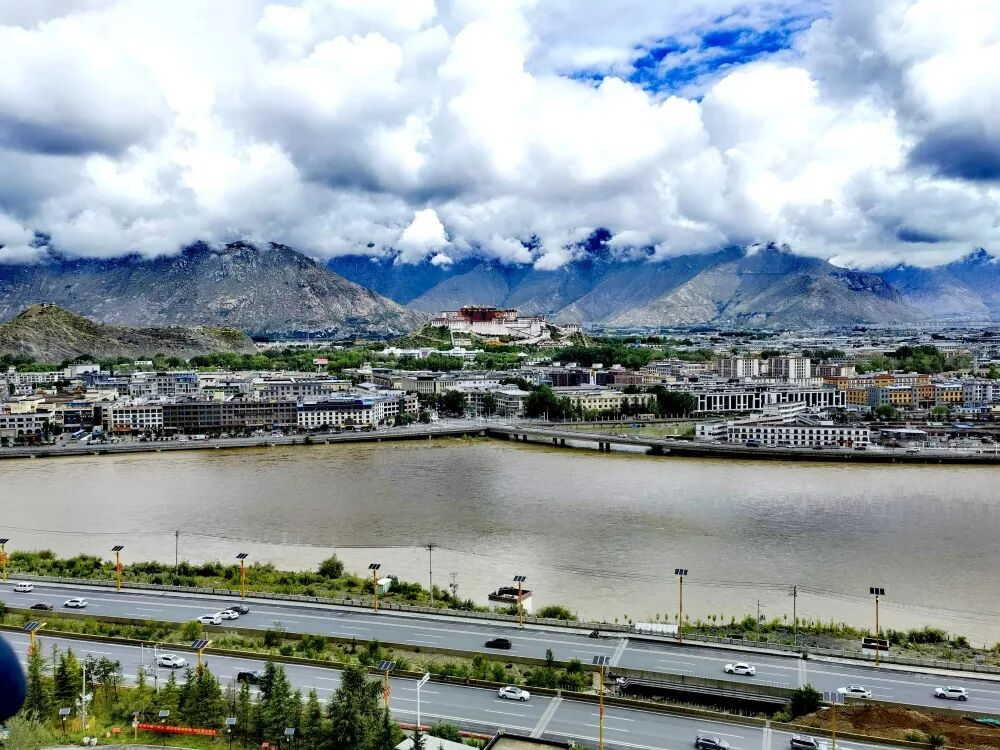
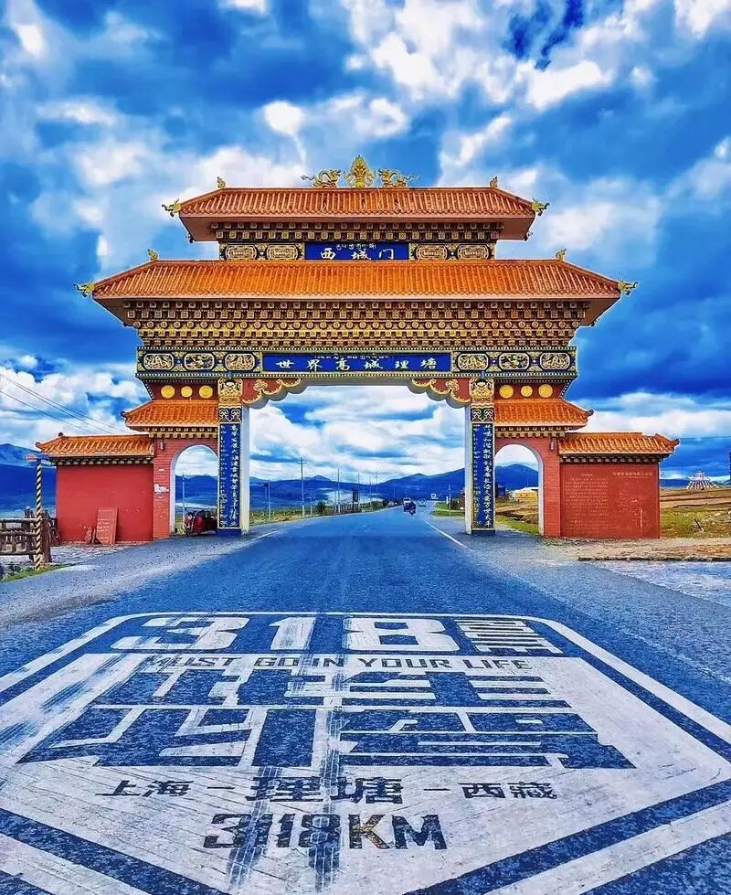
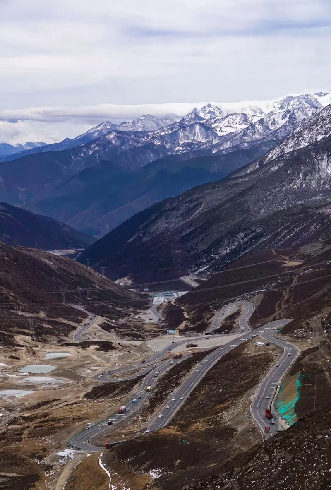

上篇 川藏线G318进藏 — 拉萨及周边 成都 → 康定 → 理塘 → 巴塘 → 芒康 → 八宿 → 然乌 → 波密 → 林芝 → 拉萨
━━━ ✦ ━━━ 全程约2,140公里 · 建议用时7-10天
🗺️ 三篇全景规划：上篇进藏 → 中篇阿里 → 下篇出藏
📅 最佳季节：5-6月 / 9-10月 本指南适用于计划自驾穿越西藏全境的旅行者
建议SUV或越野车出行，备好防滑链和氧气设备
📖 目 录 ━━━ ✦ ━━━ 一、为什么选择川藏线？
二、行前准备清单 三、详细行程规划（Day 1-10） Day 1 成都 → 康定 → 新都桥
Day 2 新都桥 → 理塘 → 巴塘
Day 3 巴塘 → 芒康 → 左贡 Day 4 左贡 → 八宿 → 然乌湖
Day 5 然乌湖 → 波密 → 鲁朗
Day 6 鲁朗 → 林芝 → 拉萨 Day 7-8 拉萨市区深度游 Day 9 拉萨 → 纳木错 → 拉萨
Day 10 拉萨 → 羊卓雍措 → 拉萨
四、沿途设施指南 五、高反应对与安全保障 六、精选摄影机位 七、上篇总结与中篇衔接

一、为什么选择川藏线？
━━━ ✦ ━━━ 川藏公路G318，被誉为「中国人的景观大道」，全长约2,140公里，是进藏自驾最经典、最壮美的路线。
它横跨四川盆地、横断山脉、青藏高原，沿途翻越14座海拔4,000米以上的雪山，跨越金沙江、澜沧江、怒江、雅鲁藏布江四大江河。
景观从亚热带雨林到冰川雪原，堪称「一日有四季，十里不同天」。
━━━ ✦ ━━━ 选择川藏线作为西藏自驾的起点，三大理由：
✅ 循序渐进的海拔适应：从成都500米逐步攀升至拉萨3,650米，让身体有充足时间适应高原环境，大大降低高反风险
✅ 极致丰富的景观带：沿途经过高山峡谷、草原花海、冰川湖泊、藏寨寺庙，几乎涵盖了西藏所有地貌类型
✅ 成熟的基础设施：相比青藏线和新藏线，G318沿线加油站、维修点、酒店、餐饮最为密集，适合首次进藏的自驾者
━━━ ✦ ━━━ ⚠️ 重要提醒 • 建议每年5-6月或9-10月出行，避开7-8月雨季和冬季冰雪期
• 建议驾驶SUV或越野车，底盘高度不低于180mm
• 全程至少配备2名驾驶员，避免疲劳驾驶
• 建议携带防滑链、备用轮胎、氧气瓶、急救药品
二、行前准备清单 ━━━ ✦ ━━━ 📋 证件与手续 •身份证（必备） •驾驶证（正副本均需携带） •车辆行驶证 •边防证（前往珠峰、阿里地区必需，可在户籍所在地或拉萨办理）
•保险单复印件（交强险+商业险+自驾游专项险）
🚗 车辆检查清单 •轮胎：检查胎压、磨损程度，备胎状态良好
•刹车系统：刹车片、刹车油检查 •机油、防冻液、玻璃水加满 •蓄电池电量充足 •雨刮器、灯光系统正常工作 •携带防滑链、千斤顶、拖车绳、搭电线 •备用油桶（高原部分路段加油站间距较长）
🏥 高原药品包 •红景天（提前7天开始服用） •高原安/高原康（应急缓解高反） •布洛芬（缓解头痛） •葡萄糖口服液（快速补充能量） •感冒药、肠胃药、创可贴 •防晒霜SPF50+、润唇膏、墨镜 •便携式氧气瓶（每车至少4瓶） 🎒 装备与物资 •冲锋衣、抓绒衣、保暖内衣（高原昼夜温差可达20℃）
•登山鞋、雨具 •保温杯、高热量零食（巧克力、牛肉干、能量棒）
•相机、三脚架、无人机（部分地区禁飞） •车载充电器、充电宝、离线地图 三、详细行程规划 Day 1 | 成都 → 康定 → 新都桥
━━━ ✦ ━━━ ━━━ ✦ ━━━ 📅 上午：成都 → 雅安 → 康定 从成都出发，沿成雅高速经雅安雨城区，翻越二郎山隧道（3,437米）。穿过隧道后，正式进入藏区。
中午在康定城区用餐，感受情歌城的藏式风情。
📅 下午：康定 → 新都桥 翻越折多山垭口（海拔4,298米），这是G318进藏第一座高山。在垭口可远眺贡嘎雪山（海拔7,556米）。
下午到达新都桥——被誉为「光与影的世界」，清晨和傍晚光影最佳，是摄影爱好者的天堂。
━━━ ✦ ━━━ 🌟 核心看点 🏔️ 二郎山隧道：川藏线第一关，穿越隧道后正式进入藏区，隧道口有「二郎山」标志性石碑
🏔️ 折多山垭口：海拔4,298米，G318进藏第一座4,000米级高山，经幡飘扬，可远眺贡嘎雪山
📸 新都桥：「摄影天堂」，藏式民居、杨树、溪流构成田园画卷，秋季金黄落叶最美
━━━ ✦ ━━━ ⚠️ 高反提示 • 新都桥海拔3,460米，是多数人首次到达的高海拔地区
• 建议今晚不要洗澡洗头，避免感冒引发高反
• 晚餐宜清淡，多喝热水，可含服红景天 • 如出现头痛、恶心等症状，可吸氧并服用高原安
🍜 美食推荐 • 康定：牦牛肉汤锅、酥油茶、青稞饼 • 新都桥：川菜馆较多，也有藏餐可选 • 推荐：新都桥贡嘎宗庄园酒店（藏式风格，供氧房间，300-500元）

Day 2 | 新都桥 → 理塘 → 巴塘
━━━ ✦ ━━━ ━━━ ✦ ━━━ 📅 上午：新都桥 → 雅江 → 理塘 翻越高尔寺山（4,412米），经雅江县城。继续前行，翻越剪子弯山（4,659米）和卡子拉山（4,718米），到达「世界高城」理塘。
理塘海拔4,014米，是世界海拔最高的城市之一，也是丁真的故乡。
📅 下午：理塘 → 巴塘 经毛垭大草原（夏季野花盛开）、海子山姊妹湖（两座高山湖泊如蓝宝石镶嵌在雪山之间），经金沙江大桥进入西藏芒康。
巴塘海拔降至2,580米，是今晚休息的好地方。
━━━ ✦ ━━━ 🌟 核心看点 🏔️ 理塘：「世界高城」，海拔4,014米，长青春科尔寺（康区最大格鲁派寺庙），丁真的故乡
🌿 毛垭大草原：夏季野花盛开，牛羊成群，典型的高原草原风光
💎 海子山姊妹湖：两座高山湖泊，G318最美拍照点之一，湖水碧蓝如玉
🌉 金沙江大桥：川藏交界标志，跨过金沙江正式进入西藏自治区
━━━ ✦ ━━━ ⚠️ 行车提示 • 今天翻越多座海拔4,000米以上的高山，道路弯多坡陡
• 剪子弯山隧道已贯通，但仍需注意暗冰 • 理塘海拔较高，不宜久留，午餐后尽快出发
• 巴塘海拔降至2,580米，今晚可恢复体力
Day 3 | 巴塘 → 芒康 → 左贡
━━━ ✦ ━━━ ━━━ ✦ ━━━ 📅 上午：巴塘 → 芒康 翻越宗拉山（4,150米），过金沙江进入西藏，到达芒康县。芒康是西藏东大门，藏文化浓郁。
中午在芒康品尝特色盐井加加面和酥油茶。
📅 下午：芒康 → 左贡 翻越拉乌山（4,376米）、觉巴山（3,911米），最后翻越东达山垭口——G318川藏线最高点，海拔5,130米。
东达山垭口经幡飘扬，气势恢宏，是川藏线上的标志性景点。
━━━ ✦ ━━━ 🌟 核心看点 🏛️ 芒康：西藏东大门，盐井古盐田（可选绕行），藏文化浓郁
🏔️ 东达山垭口：海拔5,130米，G318川藏线最高点，经幡阵壮观
🌊 澜沧江峡谷：江水奔腾，两岸悬崖峭壁，视觉震撼
━━━ ✦ ━━━ ⚠️ 海拔警告 • 东达山垭口5,130米，是全程海拔最高点，切勿剧烈运动
• 在垭口停留拍照不超过15分钟，快速通过
• 如感严重不适，立即下撤至芒康或左贡 • 左贡住宿海拔3,877米，注意保暖和休息
Day 4 | 左贡 → 八宿 → 然乌湖
━━━ ✦ ━━━ ━━━ ✦ ━━━ 📅 上午：左贡 → 八宿 翻越业拉山（海拔4,651米），体验著名的「怒江72拐」——G318最险峻路段，从海拔4,651米骤降至海拔3,100米的怒江河谷，全程约12公里，有130多个弯道。
建议使用低速挡下坡，避免刹车过热。
📅 下午：八宿 → 然乌湖 经安久拉山（4,475米），到达藏东最美湖泊——然乌湖。湖水碧蓝如玉，四周雪山环绕，日落时分绝美。
今晚入住然乌湖畔客栈，推开窗就能看到湖景。
━━━ ✦ ━━━ 🌟 核心看点 ⚠️ 怒江72拐：业拉山盘山公路，从4,651米降至3,100米，12公里约130个弯道，G318最险路段
🌊 怒江大峡谷：深达数千米，江水咆哮，气势磅礴
💎 然乌湖：藏东最美湖泊，海拔3,850米，湖水碧蓝，雪山倒影，日落绝美
━━━ ✦ ━━━ ⚠️ 安全警告 • 怒江72拐是G318事故高发路段，务必控制车速
• 弯道盲区大，严禁超车 • 建议使用低速挡下坡，避免刹车过热 • 然乌湖畔海拔3,850米，夜间温度低，注意保暖
Day 5 | 然乌湖 → 波密 → 鲁朗
━━━ ✦ ━━━ ━━━ ✦ ━━━ 📅 上午：然乌湖 → 来古冰川 → 波密
早上前往来古冰川（距然乌湖约20公里），这是世界三大海洋性冰川之一，冰舌延伸至然乌湖畔，蔚为壮观。
沿然乌湖北行，经通麦天险（现已隧道贯通，通行安全大幅提升），到达「西藏江南」波密。
📅 下午：波密 → 鲁朗 穿越波密桃花沟（3-4月最佳），经色季拉山（4,728米），可远眺南迦巴瓦峰（海拔7,782米），10月可见「日照金山」。
到达鲁朗小镇——「东方瑞士」，高山草甸、牧场、藏式民居构成田园画卷。
━━━ ✦ ━━━ 🌟 核心看点 🧊 来古冰川：世界三大海洋性冰川之一，冰舌延伸至然乌湖畔，蔚为壮观
🛤️ 通麦天险：曾经的「死亡路段」，现已隧道化，通行安全大幅提升
🌲 波密：「冰川之乡」，海拔2,725米，气候温和，森林密布，富氧环境
🏔️ 色季拉山垭口：远眺南迦巴瓦峰（7,782米），10月可见日照金山
🏡 鲁朗：「东方瑞士」，高山草甸、牧场、藏式民居构成田园画卷
━━━ ✦ ━━━ 🍜 美食推荐 • 鲁朗石锅鸡：必尝！用当地墨脱石锅炖土鸡，汤鲜味美
• 波密松茸：秋季盛产，可购买干货带回 • 推荐：鲁朗珠江酒店（石锅鸡+温泉，极佳体验，500-800元）
Day 6 | 鲁朗 → 林芝 → 拉萨
━━━ ✦ ━━━ ━━━ ✦ ━━━ 📅 上午：鲁朗 → 林芝 沿林拉高等级公路（西藏最美高速，限速80km/h）出发，沿途尼洋河风光如画——「天上银河」，河水碧蓝清澈，两岸杨树林秋季金黄。
到达林芝市区（八一镇），海拔3,000米，是西藏最宜居的城市之一。
📅 下午：林芝 → 拉萨 沿林拉高速经工布江达，翻越米拉山（5,013米）——拉萨方向的最后一座高山，经幡阵壮观。
经墨竹工卡，傍晚到达圣城拉萨。翻过米拉山后，拉萨河谷豁然开朗，布达拉宫遥遥可见。
━━━ ✦ ━━━ 🌟 核心看点 🌊 尼洋河：「天上银河」，河水碧蓝清澈，两岸杨树林秋季金黄
🏔️ 米拉山垭口：海拔5,013米，拉萨方向最后一座高山，经幡阵壮观
🛣️ 林拉高等级公路：西藏最美高速，沿途风景如画
🏯 抵达拉萨：翻过米拉山后，拉萨河谷豁然开朗，布达拉宫遥遥可见
━━━ ✦ ━━━ 💡 抵达拉萨 • 到达拉萨后，先休息2-3小时适应海拔
• 第一晚不要洗澡洗头，饮食清淡 • 推荐入住布达拉宫附近的酒店，方便次日游览
• 可先逛逛八廓街，喝杯甜茶，感受拉萨慢生活
Day 7-8 | 拉萨市区深度游 ━━━ ✦ ━━━ 经过7天的川藏线长途跋涉，终于到达圣城拉萨。建议安排2天时间深度游览，让身体完全适应高原环境，同时感受藏文化的深厚底蕴。
━━━ ✦ ━━━ 📅 Day 7：布达拉宫 → 大昭寺 → 八廓街 → 色拉寺
📅 上午：布达拉宫 世界海拔最高的宫殿，需提前一天在「布达拉宫票务预约系统」预约。游览约2小时，门票200元（旺季）。
布达拉宫是藏式建筑的巅峰之作，红宫和白宫各有特色，宫内供奉大量珍贵文物和佛像。
📅 中午：八廓街午餐 品尝藏餐：甜茶馆、藏面、糌粑、酥油茶。推荐：光明港琼甜茶馆。
📅 下午：大昭寺 + 八廓街转经 大昭寺：藏传佛教最神圣的寺庙，供奉释迦牟尼12岁等身像，门票85元。
八廓街：跟随藏民转经道，感受信仰的力量。顺时针方向行走，不要逆行。
📅 傍晚：色拉寺辩经 观看辩经表演（每日15:00-17:00），感受藏传佛教的学术传统。僧人们通过激烈的辩论来检验对佛法的理解，场面十分震撼。
━━━ ✦ ━━━ 📅 Day 8：哲蚌寺 → 罗布林卡 → 西藏博物馆 → 药王山
📅 上午：哲蚌寺 藏区最大寺庙，曾是达赖喇嘛的母寺。白登节晒佛仪式在此举行。建议打车前往（约30分钟）。
📅 中午：罗布林卡 达赖喇嘛夏宫，藏式园林建筑典范。步行约15分钟可达。附近餐厅午餐。
📅 下午：西藏博物馆 + 药王山 西藏博物馆：免费参观，全面了解西藏历史、文化、民俗。
药王山观景台：50元人民币背景图案拍摄地，拍摄布达拉宫日落全景的最佳位置。
━━━ ✦ ━━━ 💡 拉萨游玩贴士 • 布达拉宫门票旺季200元，需提前预约（建议抵达当天就去预约次日票）
• 大昭寺门票85元，可请讲解员（约100元/次）
• 拉萨海拔3,650米，步行速度放慢，避免剧烈运动
• 尊重藏传佛教礼仪：顺时针方向转经、不摸小和尚头、寺庙内禁止拍照
Day 9 | 拉萨 → 纳木错 → 拉萨
━━━ ✦ ━━━ ━━━ ✦ ━━━ 📅 上午：拉萨 → 羊八井 → 当雄 沿109国道北行，经羊八井地热田（可见地热蒸汽喷涌）、念青唐古拉山观景台。
当雄县城午餐后，继续前往纳木错。
📅 下午：当雄 → 纳木错 翻越那根拉山口（海拔5,190米）——纳木错最佳观景台，经幡阵和玛尼堆壮观。
到达纳木错湖畔，环湖游览。主要景点在扎西半岛，有合掌石、善恶洞等。
傍晚返回拉萨，不建议在纳木错过夜（海拔太高，易引发严重高反）。
━━━ ✦ ━━━ 🌟 核心看点 💎 纳木错：西藏三大圣湖之一，海拔4,718米，世界上海拔最高的大型湖泊，湖水蓝得不可思议
🏔️ 念青唐古拉山：与纳木错遥相呼应，主峰海拔7,162米，终年积雪
🏔️ 那根拉山口：海拔5,190米，纳木错最佳观景台，经幡阵和玛尼堆壮观
🏝️ 扎西半岛：纳木错主要游览区域，有合掌石、善恶洞等景点
━━━ ✦ ━━━ ⚠️ 纳木错注意事项 • 那根拉山口和纳木错海拔极高，停留时间不宜过长
• 湖边风大温度低，即使夏季也要穿厚外套
• 不建议在纳木错过夜（海拔太高，易引发严重高反）
• 纳木错门票120元，观光车票60元 Day 10 | 拉萨 → 羊卓雍措 → 拉萨
━━━ ✦ ━━━ ━━━ ✦ ━━━ 📅 上午：拉萨 → 岗巴拉山口 沿307省道南行，翻越岗巴拉山口（海拔4,998米），俯瞰羊卓雍措全景——湖形如珊瑚枝，湖水在不同光线下呈现深蓝、浅蓝、翠绿等多种色彩。
📅 中午：羊湖环湖 沿湖北岸行驶，到达最佳观景点，近距离接触圣湖。湖边有简餐供应。
📅 下午：可选绕行卡若拉冰川 卡若拉冰川：距离公路最近的冰川之一，冰舌近在咫尺。电影《红河谷》取景地。需额外2小时。
傍晚返回拉萨。
━━━ ✦ ━━━ 🌟 核心看点 💎 羊卓雍措：西藏三大圣湖之一，湖形如珊瑚枝，湖水在不同光线下呈现深蓝、浅蓝、翠绿等多种色彩
🏔️ 岗巴拉山口：羊湖最佳观景台，可俯瞰整个湖面的壮阔全景
🧊 卡若拉冰川：距离公路最近的冰川之一，冰舌近在咫尺（可选绕行，需额外2小时）
━━━ ✦ ━━━ 💡 羊湖游览建议 • 岗巴拉山口观景台是最佳拍照点，建议停留20-30分钟
• 湖边走路放慢，海拔4,441米 • 如时间充裕，建议绕行卡若拉冰川，非常值得
• 羊湖门票90元 四、沿途设施指南 ━━━ ✦ ━━━ ⛽ 关键节点加油站 节点 加油站 间距 备注 成都 中石化/中石油 - 出发前加满 康定 中石化/中石油 219km 建议加满 雅江 中石化 147km 可补充 理塘 中石油 242km 建议加满 巴塘 中石油 105km 入藏前加满 芒康 中石油 263km 西藏首站 左贡 中石油 202km 建议补充 八宿 中石油 292km 可补充 波密 中石油 230km 建议加满 林芝 中石化/中石油 403km 设施完善 拉萨 中石化/中石油 - 中篇前加满 🏥 医疗资源分布 •康定市人民医院：甘孜州最好的医院，可处理一般急症
•理塘县人民医院：海拔较高，设备有限，仅处理基础疾病
•芒康县医院：进入西藏后第一家医院，条件简陋
•八宿县人民医院：可处理一般外伤和感冒 •波密县人民医院：条件相对较好 •林芝市人民医院：西藏东部最好的医院之一
•西藏自治区人民医院（拉萨）：全区最高水平医疗机构
🏨 住宿推荐 地点 推荐酒店 价位 特色 新都桥 贡嘎宗庄园 300-500 藏式风格，供氧 理塘 理塘大酒店 200-350 县城中心 巴塘 雪域酒店 200-300 海拔低，休息好 左贡 兴旺酒店 200-350 设施齐全 然乌湖 自驾营地 400-600 湖景房 波密 希尔顿花园 400-600 品质好，供氧 鲁朗 珠江酒店 500-800 石锅鸡+温泉 林芝 工布庄园希尔顿 600-1000 五星品质 拉萨 香格里拉大酒店 800-1500 布宫附近 五、高反应对与安全保障 ━━━ ✦ ━━━ 🫁 高反分级应对 程度 症状 海拔 应对措施 轻度 头痛、失眠、食欲下降 3,000-4,000m 休息、多喝水、红景天 中度 恶心呕吐、呼吸困难 4,000-4,500m 吸氧、高原安、减少活动 重度 意识模糊、咳嗽带血 4,500m+ 立即下撤，紧急就医 🆘 紧急救援电话 •西藏救援电话：0891-6333333
•全国急救：120 •报警：110 •建议购买自驾游专项保险（含高原救援） •全程保持手机畅通，下载「西藏通」APP获取路况信息
━━━ ✦ ━━━ 六、精选摄影机位 ━━━ ✦ ━━━ G318沿线「处处是景，步步入画」，精选10个最佳摄影点：
📸 折多山垭口：清晨远眺贡嘎雪山（G318 K2,880）
📸 新都桥十里长廊：日落前1小时光影最佳（G318 K2,900）
📸 理塘毛垭大草原：夏季7-8月野花盛开（G318 K3,050）
📸 海子山姊妹湖：晴天正午湖面最蓝（G318 K3,130）
📸 怒江72拐观景台：清晨云雾缭绕（G318 K3,420）
📸 然乌湖日落：雪山倒影绝美（然乌湖北岸）
📸 色季拉山远眺南迦巴瓦：10月日照金山（G318 K3,650）
📸 米拉山垭口：蓝天白云经幡阵（G318 K4,440）
📸 布达拉宫50元取景地：日落经典角度（药王山观景台）
📸 羊卓雍措岗巴拉山口：晴天上午湖水最蓝（307省道）
七、上篇总结 ━━━ ✦ ━━━ 经过10天的川藏线G318自驾，你将从成都平原一路攀升至世界屋脊，完成一次身体与心灵的双重洗礼。
上篇路线覆盖了G318最精华的路段，也是大多数自驾者首次进藏的选择。
━━━ ✦ ━━━ 📊 上篇行程总结 指标 数据 总里程 约2,140公里 用时 10天（建议） 最高海拔 5,190米（那根拉山口） 翻越垭口 14座（海拔4,000m以上） 跨越江河 大渡河、雅砻江、金沙江、澜沧江、怒江、尼洋河、雅鲁藏布江
核心景观 折多山、理塘草原、怒江72拐、然乌湖、来古冰川、色季拉山、布达拉宫、纳木错、羊卓雍措
━━━ ✦ ━━━ 🚩 与中篇衔接 上篇在拉萨结束，身体已完全适应高原环境。中篇将从拉萨出发，沿318国道继续向西，经日喀则前往珠峰大本营，再深入阿里地区，探访圣湖玛旁雍措、神山冈仁波齐、古格王朝遗址等西藏最极致的自然与人文景观。
━━━ ✦ ━━━ ⚠️ 中篇出行前准备 • 在拉萨补办边防证（如需前往珠峰、阿里）
• 车辆做一次全面检查（轮胎、刹车、机油）
• 补充高反药品和氧气 • 储备足够的现金（阿里部分地区信号差，移动支付不便）
• 准备更厚的衣物（阿里海拔4,500m+，夜间可达-10℃）
━━━ ✦ ━━━ 📖 中篇 —— 阿里南线 · 珠峰大本营 · 藏西秘境

期待与你同行 · 感受华夏九州的美好 📞 联系我们，开始这段难忘的旅程
国承文旅 · 专注精品文旅体验
Part 1: G318 Sichuan-Tibet Highway into Tibet — Lhasa & Surroundings. Chengdu → Kangding → Litang → Batang → Markam → Baxoi → Ranwu → Bomi → Nyingchi → Lhasa
━━━ ✦ ━━━ Total distance: approx. 2,140 km · Recommended duration: 7–10 days
🗺️ Three-part panoramic guide: Part 1 Entering Tibet → Part 2 Ngari → Part 3 Exiting Tibet
📅 Best seasons: May–June / September–October. This guide is designed for travelers planning a self-drive journey across the entirety of Tibet.
An SUV or off-road vehicle is recommended; carry snow chains and oxygen equipment.
📖 Table of Contents ━━━ ✦ ━━━ 1. Why Choose the Sichuan-Tibet Highway?
2. Pre-departure Checklist 3. Detailed Itinerary (Days 1–10) Day 1: Chengdu → Kangding → Xinduqiao
Day 2: Xinduqiao → Litang → Batang
Day 3: Batang → Markam → Zogang Day 4: Zogang → Baxoi → Ranwu Lake
Day 5: Ranwu Lake → Bomi → Lunang
Day 6: Lunang → Nyingchi → Lhasa Day 7–8: Lhasa In-depth City Tour Day 9: Lhasa → Namtso → Lhasa
Day 10: Lhasa → Yamdrok Lake → Lhasa
4. Roadside Facilities Guide 5. Altitude Sickness & Safety 6. Top Photography Spots 7. Part 1 Summary & Transition to Part 2
1. Why Choose the Sichuan-Tibet Highway?
━━━ ✦ ━━━ National Highway G318, hailed as "China's Scenic Boulevard," stretches roughly 2,140 kilometers and is the most classic, most spectacular self-drive route into Tibet.
It traverses the Sichuan Basin, the Hengduan Mountains, and the Qinghai-Tibet Plateau, crossing 14 snow-capped passes above 4,000 meters and spanning four major rivers: the Jinsha, Lancang (Mekong), Nu (Salween), and Yarlung Tsangpo (Brahmaputra).
The landscape shifts from subtropical rainforest to glacial snowfields — a journey where you can experience "four seasons in a single day and different skies every ten miles."
━━━ ✦ ━━━ Three compelling reasons to choose the Sichuan-Tibet Highway as your gateway to Tibet:
✅ Gradual altitude acclimatization: Ascending from Chengdu at 500 m to Lhasa at 3,650 m gives your body ample time to adjust to high altitude, dramatically reducing the risk of altitude sickness
✅ Unparalleled scenic diversity: The route passes through alpine gorges, grassland flower seas, glacial lakes, and Tibetan villages and monasteries, covering virtually every landscape type found in Tibet
✅ Well-established infrastructure: Compared with the Qinghai-Tibet (G109) and Xinjiang-Tibet (G219) highways, G318 offers the densest network of gas stations, repair shops, hotels, and restaurants — ideal for first-time Tibet self-drivers
━━━ ✦ ━━━ ⚠️ Important reminders • The best travel windows are May–June or September–October; avoid the July–August rainy season and the winter ice period
• An SUV or off-road vehicle with at least 180 mm ground clearance is recommended
• Bring at least two licensed drivers to avoid driver fatigue
• Carry snow chains, a spare tire, oxygen canisters, and a first-aid kit
2. Pre-departure Checklist ━━━ ✦ ━━━ 📋 Documents & Permits •National ID card (essential) •Driver's license (carry both the main card and the supplementary page) •Vehicle registration •Border defense permit (required for Everest Base Camp and Ngari; can be obtained in your household registration city or in Lhasa)
•Insurance documents (copies) — compulsory traffic insurance + commercial insurance + self-drive travel insurance
🚗 Vehicle Inspection Checklist •Tires: Check pressure, tread wear, and ensure the spare is in good condition
•Braking system: Inspect brake pads and brake fluid •Top up engine oil, antifreeze, and windshield washer fluid •Battery fully charged •Wipers and lights functioning properly •Carry snow chains, jack, tow rope, and jumper cables •Spare fuel canister (some high-altitude stretches have long gaps between gas stations)
🏥 High-Altitude Medicine Kit •Rhodiola rosea (start taking 7 days before departure) •Gaoyuan'an / Gaoyuankang (for emergency altitude sickness relief) •Ibuprofen (for headache relief) •Oral glucose solution (quick energy boost) •Cold medicine, stomach medicine, adhesive bandages •SPF 50+ sunscreen, lip balm, sunglasses •Portable oxygen canisters (at least 4 per vehicle) 🎒 Gear & Supplies •Windbreaker, fleece jacket, thermal underwear (diurnal temperature swings on the plateau can reach 20°C)
•Hiking boots, rain gear •Insulated water bottle, high-calorie snacks (chocolate, beef jerky, energy bars)
•Camera, tripod, drone (note: drones are prohibited in certain areas) •Car charger, power bank, offline maps 3. Detailed Itinerary Day 1 | Chengdu → Kangding → Xinduqiao
━━━ ✦ ━━━ ━━━ ✦ ━━━ 📅 Morning: Chengdu → Ya'an → Kangding Depart Chengdu, take the Chengdu-Ya'an Expressway past Ya'an's rainy district, and pass through the Erlang Mountain Tunnel (3,437 m). After emerging from the tunnel, you officially enter the Tibetan region.
Stop for lunch in Kangding town and soak in the Tibetan ambiance of the "Love Song City."
📅 Afternoon: Kangding → Xinduqiao Cross Zheduo Mountain Pass (4,298 m), the first high mountain on the G318 route into Tibet. From the pass, enjoy distant views of Mount Gongga (Minya Konka, 7,556 m).
Arrive in Xinduqiao in the afternoon — known as the "World of Light and Shadow." Early morning and late afternoon offer the best light, making this a paradise for photographers.
━━━ ✦ ━━━ 🌟 Highlights 🏔️ Erlang Mountain Tunnel: The first gateway on the Sichuan-Tibet Highway; once through, you officially enter the Tibetan region. Look for the iconic "Erlang Mountain" stone marker at the tunnel entrance
🏔️ Zheduo Mountain Pass: At 4,298 m, this is the first 4,000-meter pass on the G318 route into Tibet. Prayer flags flutter in the wind, and Mount Gongga is visible in the distance
📸 Xinduqiao: "Photographers' Paradise" — Tibetan-style houses, poplar trees, and streams compose an idyllic pastoral tableau. The golden autumn foliage is at its most stunning
━━━ ✦ ━━━ ⚠️ Altitude sickness tips • Xinduqiao sits at 3,460 m and is most people's first experience staying at high altitude
• It is advisable to skip showering and hair-washing tonight to reduce the risk of catching a cold, which can trigger altitude sickness
• Eat a light dinner, drink plenty of warm water, and consider taking Rhodiola • If symptoms such as headache or nausea appear, use oxygen and take Gaoyuan'an
🍜 Food Recommendations • Kangding: Yak meat hotpot, yak butter tea, barley flatbread • Xinduqiao: Plenty of Sichuan restaurants; Tibetan meals are also available • Recommended: Gongga Zong Manor Hotel (Tibetan style, oxygen-equipped rooms, ¥300–500/night)
Day 2 | Xinduqiao → Litang → Batang
━━━ ✦ ━━━ ━━━ ✦ ━━━ 📅 Morning: Xinduqiao → Yajiang → Litang Cross Gao'er Temple Mountain (4,412 m), pass through Yajiang county town, then continue over Jianziwan Mountain (4,659 m) and Kazila Mountain (4,718 m) to reach the "High City of the World" — Litang.
Litang, at 4,014 m, is one of the highest cities in the world and also the hometown of Ding Zhen (Tamdrin).
📅 Afternoon: Litang → Batang Pass through the Maoya Grassland (ablaze with wildflowers in summer), visit Haizi Mountain's Sister Lakes (two alpine lakes like sapphires embedded among snowy peaks), cross the Jinsha River Bridge, and officially enter the Tibet Autonomous Region via Markam.
Batang, descending to 2,580 m, is an excellent place to rest overnight.
━━━ ✦ ━━━ 🌟 Highlights 🏔️ Litang: The "High City of the World" at 4,014 m. Visit Changqingchunke Monastery (the largest Gelugpa monastery in Kham) and the hometown of Ding Zhen
🌿 Maoya Grassland: Wildflowers bloom in summer across endless pastures dotted with grazing yaks and sheep — quintessential high-plateau grassland scenery
💎 Haizi Mountain Sister Lakes: Twin alpine lakes, one of the most photogenic spots along G318, with strikingly turquoise waters
🌉 Jinsha River Bridge: Marks the Sichuan-Tibet border; crossing the Jinsha River means formally entering the Tibet Autonomous Region
━━━ ✦ ━━━ ⚠️ Driving tips • Today you will cross multiple mountain passes above 4,000 m; the road is winding with steep gradients
• The Jianziwan Mountain Tunnel is now open, but watch for black ice • Due to Litang's high altitude, avoid lingering too long; depart soon after lunch
• Batang, at a much more comfortable 2,580 m, is ideal for recovery and a good night's rest
Day 3 | Batang → Markam → Zogang
━━━ ✦ ━━━ ━━━ ✦ ━━━ 📅 Morning: Batang → Markam Cross Zongla Mountain (4,150 m), cross the Jinsha River into Tibet, and arrive in Markam County. Markam is the eastern gateway to Tibet, rich in Tibetan culture.
At lunchtime in Markam, try the specialty Yanjing Jiajia noodles and yak butter tea.
📅 Afternoon: Markam → Zogang Cross Lawu Mountain (4,376 m) and Jueba Mountain (3,911 m), then tackle the highest point on the G318 Sichuan-Tibet Highway — Dongda Mountain Pass at 5,130 m.
Dongda Mountain Pass, adorned with vast fields of prayer flags, is one of the most iconic landmarks on the Sichuan-Tibet route.
━━━ ✦ ━━━ 🌟 Highlights 🏛️ Markam: Tibet's eastern gateway. Optional detour to the Yanjing Ancient Salt Pans. Deeply infused with Tibetan culture
🏔️ Dongda Mountain Pass: At 5,130 m, the highest point on the G318 Sichuan-Tibet Highway; the prayer flag array here is spectacular
🌊 Lancang (Mekong) River Gorge: The river surges between sheer cliffs on both banks — a visually breathtaking experience
━━━ ✦ ━━━ ⚠️ Altitude warning • Dongda Mountain Pass at 5,130 m is the highest point on the entire route; avoid any strenuous physical activity
• Do not linger at the pass for more than 15 minutes; take your photos and move on quickly
• If you feel seriously unwell, descend immediately toward Markam or Zogang • Accommodation in Zogang is at 3,877 m; stay warm and rest well
Day 4 | Zogang → Baxoi → Ranwu Lake
━━━ ✦ ━━━ ━━━ ✦ ━━━ 📅 Morning: Zogang → Baxoi Cross Yela Mountain (4,651 m) and experience the legendary "72 Hairpin Turns of the Nu River" — the most treacherous stretch of G318. Over roughly 12 kilometers, the road plunges from 4,651 m down to the Nu River valley at 3,100 m, featuring more than 130 hairpin bends.
Use low gear for the descent to prevent brake overheating.
📅 Afternoon: Baxoi → Ranwu Lake Continue over Anjula Mountain (4,475 m) to reach the most beautiful lake in eastern Tibet — Ranwu Lake. Its turquoise waters are encircled by snow-capped peaks; sunset here is simply breathtaking.
Stay overnight at a lakeside guesthouse — open your window to a postcard view.
━━━ ✦ ━━━ 🌟 Highlights ⚠️ 72 Hairpin Turns of the Nu River: Yela Mountain's winding switchback road descends from 4,651 m to 3,100 m over 12 km with roughly 130 bends — the most dangerous stretch of G318
🌊 Nu River Grand Canyon: Thousands of meters deep, with the river roaring through — an awe-inspiring sight
💎 Ranwu Lake: Eastern Tibet's most beautiful lake, at 3,850 m. Crystal-turquoise waters mirror the surrounding snowy peaks; sunset is magical
━━━ ✦ ━━━ ⚠️ Safety warning • The 72 Hairpin Turns is a high-accident zone on G318; control your speed at all times
• Many corners have large blind spots — overtaking is strictly prohibited • Use low gear on the descent to prevent brake overheating • Ranwu Lake sits at 3,850 m; nighttime temperatures drop sharply — dress warmly
Day 5 | Ranwu Lake → Bomi → Lunang
━━━ ✦ ━━━ ━━━ ✦ ━━━ 📅 Morning: Ranwu Lake → Laigu Glacier → Bomi
In the morning, drive to Laigu Glacier (roughly 20 km from Ranwu Lake), one of the world's three major maritime glaciers. Its ice tongue extends all the way to the lakeshore — a truly magnificent sight.
Continue north along Ranwu Lake, pass through the Tongmai natural barrier (now fully tunneled, dramatically safer), and arrive in Bomi — often called "Switzerland of Tibet."
📅 Afternoon: Bomi → Lunang Drive through Bomi's Peach Blossom Valley (best in March–April), cross Sejila Mountain (4,728 m) for distant views of Namcha Barwa (7,782 m) — in October, witness the fabled "Golden Sunlight on the Snow Peak."
Arrive in the town of Lunang — "Eastern Switzerland" — where alpine meadows, pastures, and Tibetan-style houses form an idyllic pastoral canvas.
━━━ ✦ ━━━ 🌟 Highlights 🧊 Laigu Glacier: One of the world's three major maritime glaciers; its ice tongue stretches to Ranwu Lake's shore — spectacular
🛤️ Tongmai Natural Barrier: Once the "Road of Death," now fully upgraded with bridges and tunnels for vastly improved safety
🌲 Bomi: "Home of Glaciers," at 2,725 m. A mild climate, dense forests, and oxygen-rich air make it a refreshing stop
🏔️ Sejila Mountain Pass: View Namcha Barwa (7,782 m) in the distance; in October, catch the golden sunrise or sunset on the peak
🏡 Lunang: "Eastern Switzerland" — alpine meadows, pastures, and Tibetan-style houses compose an idyllic rural scene
━━━ ✦ ━━━ 🍜 Food Recommendations • Lunang Stone-Pot Chicken: A must-try! Free-range chicken stewed in a traditional Mêdog stone pot — rich, aromatic broth
• Bomi matsutake mushrooms: Harvested in autumn; dried mushrooms make excellent gifts • Recommended: Lunang Zhujiang Hotel (stone-pot chicken + hot springs, outstanding experience, ¥500–800/night)
Day 6 | Lunang → Nyingchi → Lhasa
━━━ ✦ ━━━ ━━━ ✦ ━━━ 📅 Morning: Lunang → Nyingchi Take the Nyingchi-Lhasa Expressway (Tibet's most scenic highway, speed limit 80 km/h), following the Nyang River — known as the "Milky Way in the Sky" — whose turquoise waters are flanked by golden poplar forests in autumn.
Arrive in Nyingchi city (Bayi Town), at 3,000 m, one of Tibet's most livable cities.
📅 Afternoon: Nyingchi → Lhasa Continue along the Nyingchi-Lhasa Expressway via Gongbo'gyamda, cross Mira Mountain (5,013 m) — the final high pass before Lhasa, with an impressive array of prayer flags.
Pass through Maizhokunggar and reach the holy city of Lhasa by evening. After Mira Mountain Pass, the Lhasa River valley opens wide, and the Potala Palace appears on the distant horizon.
━━━ ✦ ━━━ 🌟 Highlights 🌊 Nyang River: "Milky Way in the Sky" — crystal-clear turquoise waters lined with golden poplar forests in autumn
🏔️ Mira Mountain Pass: At 5,013 m, the final high-altitude pass before Lhasa; the prayer flag array is spectacular
🛣️ Nyingchi-Lhasa Expressway: Tibet's most scenic highway — picture-perfect landscapes on both sides
🏯 Arriving in Lhasa: After Mira Mountain, the Lhasa River valley opens up, and the Potala Palace appears on the distant horizon
━━━ ✦ ━━━ 💡 Tips for arriving in Lhasa • Rest for 2–3 hours upon arrival to acclimatize to the altitude
• Do not shower or wash your hair on the first evening; eat light meals • Book a hotel near the Potala Palace for convenient sightseeing the next day
• Take a stroll along Barkhor Street, sip sweet tea, and soak in Lhasa's unhurried rhythm
Days 7–8 | Lhasa In-depth City Tour ━━━ ✦ ━━━ After seven days on the long Sichuan-Tibet Highway, you have finally reached the holy city of Lhasa. Set aside two full days for an in-depth exploration, allowing your body to fully adapt to the altitude while immersing yourself in Tibetan culture.
━━━ ✦ ━━━ 📅 Day 7: Potala Palace → Jokhang Temple → Barkhor Street → Sera Monastery
📅 Morning: Potala Palace The world's highest-altitude palace. You must reserve tickets one day in advance via the "Potala Palace Ticket Reservation System." The tour takes about 2 hours; tickets cost ¥200 (peak season).
The Potala Palace is the pinnacle of Tibetan architecture — the Red Palace and White Palace each have their own distinctive character; the interior houses priceless cultural relics and Buddhist statues.
📅 Midday: Lunch on Barkhor Street Sample Tibetan cuisine: sweet tea house, Tibetan noodles, tsampa, yak butter tea. Recommended: Guangming Gangqiong Sweet Tea House.
📅 Afternoon: Jokhang Temple + Barkhor Street Kora Jokhang Temple: Tibetan Buddhism's most sacred temple, enshrining a life-sized statue of Shakyamuni at age 12. Ticket: ¥85.
Barkhor Street: Join Tibetan pilgrims on the kora circuit and feel the power of faith. Walk clockwise — never go against the flow.
📅 Evening: Sera Monastery Debate Watch the monk debate performance (daily 15:00–17:00) and experience Tibetan Buddhism's scholarly tradition. Monks engage in vigorous debate to test their understanding of Buddhist teachings — an electrifying spectacle.
━━━ ✦ ━━━ 📅 Day 8: Drepung Monastery → Norbulingka → Tibet Museum → Chakpori (Medicine King Hill)
📅 Morning: Drepung Monastery The largest monastery in Tibet and the former mother monastery of the Dalai Lamas. The Shoton Festival's giant Thangka unveiling ceremony is held here. Take a taxi (about 30 minutes).
📅 Midday: Norbulingka The Dalai Lama's Summer Palace, a masterpiece of Tibetan garden architecture. About a 15-minute walk. Lunch at a nearby restaurant.
📅 Afternoon: Tibet Museum + Chakpori Tibet Museum: Free admission. A comprehensive overview of Tibetan history, culture, and folk traditions.
Chakpori (Medicine King Hill) Viewing Platform: The vantage point featured on the back of the 50-yuan banknote — the best location for photographing the Potala Palace at sunset.
━━━ ✦ ━━━ 💡 Lhasa travel tips • Potala Palace peak-season tickets cost ¥200; advance booking is essential (recommend booking your next-day ticket on arrival day)
• Jokhang Temple tickets cost ¥85; consider hiring a guide (approx. ¥100/session)
• Lhasa sits at 3,650 m; slow your walking pace and avoid intense physical exertion
• Respect Tibetan Buddhist customs: always walk clockwise on kora circuits, do not touch monks' heads, and no photography inside temples
Day 9 | Lhasa → Namtso → Lhasa
━━━ ✦ ━━━ ━━━ ✦ ━━━ 📅 Morning: Lhasa → Yangbajain → Damxung Head north along National Highway G109, passing the Yangbajain geothermal field (where steam vents from the earth) and the Nyenchen Tanglha Mountain viewing platform.
After lunch in Damxung county town, continue toward Namtso.
📅 Afternoon: Damxung → Namtso Cross Nagenla Pass (5,190 m) — the best vantage point for Namtso, with awe-inspiring prayer flag arrays and mani stone mounds.
Arrive at Namtso Lake and take a circuit tour. The main scenic area is on Tashi Peninsula, featuring the Palms-Together Rock and the Good & Evil Cave.
Return to Lhasa by evening. Staying overnight at Namtso is not recommended (the extreme altitude makes severe altitude sickness highly likely).
━━━ ✦ ━━━ 🌟 Highlights 💎 Namtso: One of Tibet's three sacred lakes, at 4,718 m, the world's highest large lake. Its impossibly blue water is unforgettable
🏔️ Nyenchen Tanglha: Towering in the distance opposite Namtso; the main peak reaches 7,162 m and is perpetually snow-capped
🏔️ Nagenla Pass: At 5,190 m, the premier Namtso viewing platform, with spectacular prayer flag arrays and mani stone mounds
🏝️ Tashi Peninsula: Namtso's main sightseeing area, featuring the Palms-Together Rock and the Good & Evil Cave
━━━ ✦ ━━━ ⚠️ Namtso precautions • Nagenla Pass and Namtso are at extreme altitudes; do not stay too long
• Lakeside winds are strong and temperatures low — wear a thick coat even in summer
• Overnight stays at Namtso are not recommended (the extreme altitude poses a severe risk of altitude sickness)
• Namtso admission: ¥120; shuttle bus ticket: ¥60 Day 10 | Lhasa → Yamdrok Lake → Lhasa
━━━ ✦ ━━━ ━━━ ✦ ━━━ 📅 Morning: Lhasa → Kambala Pass Drive south on Provincial Highway S307, cross Kambala Pass (4,998 m), and take in the panoramic view of Yamdrok Lake — shaped like a coral branch, its waters shifting between deep blue, light blue, and emerald green depending on the light.
📅 Midday: Yamdrok Lakeside Circuit Drive along the northern shore to the best viewing point for an up-close encounter with this sacred lake. Simple meals are available by the lake.
📅 Afternoon: Optional detour to Karola Glacier Karola Glacier: One of the glaciers closest to a main road, with its ice tongue seemingly within arm's reach. Filming location for the movie Red River Valley. Adds roughly 2 hours.
Return to Lhasa by evening.
━━━ ✦ ━━━ 🌟 Highlights 💎 Yamdrok Lake: One of Tibet's three sacred lakes; the lake is shaped like a coral branch, its waters displaying deep blue, light blue, and emerald green hues as the light changes
🏔️ Kambala Pass: The best viewing platform for Yamdrok Lake, offering a sweeping panorama of the entire lake
🧊 Karola Glacier: One of the glaciers closest to a main road, with its ice tongue seemingly within reach (optional detour, adds roughly 2 hours)
━━━ ✦ ━━━ 💡 Yamdrok Lake tips • Kambala Pass viewing platform is the best photo spot; allow 20–30 minutes
• Walk slowly by the lake — the elevation is 4,441 m • If time allows, the detour to Karola Glacier is highly worthwhile
• Yamdrok Lake admission: ¥90 4. Roadside Facilities Guide ━━━ ✦ ━━━ ⛽ Key Gas Stations Stop Station Gap Notes Chengdu Sinopec/PetroChina — Fill up before departure Kangding Sinopec/PetroChina 219 km Top-up recommended Yajiang Sinopec 147 km Refuel if needed Litang PetroChina 242 km Top-up recommended Batang PetroChina 105 km Fill up before entering Tibet Markam PetroChina 263 km First stop in Tibet Zogang PetroChina 202 km Top-up recommended Baxoi PetroChina 292 km Refuel if needed Bomi PetroChina 230 km Top-up recommended Nyingchi Sinopec/PetroChina 403 km Well-equipped Lhasa Sinopec/PetroChina — Fill up before Part 2 🏥 Medical Facilities •Kangding People's Hospital: The best hospital in Ganzi Prefecture; can handle general emergencies
•Litang County People's Hospital: High altitude and limited equipment; basic care only
•Markam County Hospital: The first hospital after entering Tibet; basic facilities
•Baxoi County People's Hospital: Can manage minor injuries and common colds •Bomi County People's Hospital: Relatively better conditions •Nyingchi City People's Hospital: One of the best hospitals in eastern Tibet
•Tibet Autonomous Region People's Hospital (Lhasa): The highest-standard medical facility in the region
🏨 Accommodation Recommendations Location Hotel Price Range Highlight Xinduqiao Gongga Zong Manor ¥300–500 Tibetan style, oxygen-equipped Litang Litang Hotel ¥200–350 Town center Batang Xueyu Hotel ¥200–300 Low altitude, rest well Zogang Xingwang Hotel ¥200–350 Fully equipped Ranwu Lake Self-drive Camp ¥400–600 Lake-view rooms Bomi Hilton Garden Inn ¥400–600 Quality stay, oxygen-equipped Lunang Zhujiang Hotel ¥500–800 Stone-pot chicken + hot springs Nyingchi Gongbu Manor Hilton ¥600–1,000 Five-star quality Lhasa Shangri-La Hotel ¥800–1,500 Near the Potala Palace 5. Altitude Sickness & Safety ━━━ ✦ ━━━ 🫁 Altitude Sickness Triage Degree Symptoms Altitude Response Mild Headache, insomnia, appetite loss 3,000–4,000 m Rest, hydrate, take Rhodiola Moderate Nausea, vomiting, shortness of breath 4,000–4,500 m Use oxygen, take Gaoyuan'an, reduce activity Severe Confusion, coughing up blood 4,500 m+ Descend immediately, seek emergency care 🆘 Emergency Contacts •Tibet Rescue Hotline: 0891-6333333
•National Emergency: 120 •Police: 110 •Purchase self-drive travel insurance that includes high-altitude rescue coverage •Keep your mobile phone functional throughout; download the "Tibet Connect" app for road condition updates
━━━ ✦ ━━━ 6. Top Photography Spots ━━━ ✦ ━━━ Along G318, "every turn is a scene, every step is a painting." Here are the 10 best photography vantage points:
📸 Zheduo Mountain Pass: Dawn views of Mount Gongga (G318 K2,880)
📸 Xinduqiao Ten-Mile Corridor: Best light one hour before sunset (G318 K2,900)
📸 Litang Maoya Grassland: Wildflowers in full bloom July–August (G318 K3,050)
📸 Haizi Mountain Sister Lakes: The lake is at its bluest under the midday sun (G318 K3,130)
📸 72 Hairpin Turns Viewing Deck: Morning mist swirling through the bends (G318 K3,420)
📸 Ranwu Lake Sunset: Stunning snow-mountain reflections (north shore of Ranwu Lake)
📸 Sejila Mountain, Namcha Barwa Viewpoint: October golden sunlight on the peak (G318 K3,650)
📸 Mira Mountain Pass: Blue sky, white clouds, and prayer flags (G318 K4,440)
📸 Potala Palace 50-yuan Banknote Vantage Point: Classic sunset angle (Chakpori Viewing Platform)
📸 Yamdrok Lake, Kambala Pass: Morning sunlight yields the bluest water (Provincial Highway S307)
7. Part 1 Summary ━━━ ✦ ━━━ After 10 days on the Sichuan-Tibet Highway G318, you will have climbed from the Chengdu Basin all the way up to the Roof of the World — a journey that purifies both body and soul.
Part 1 covers the most essential stretch of G318, and it is the route most self-drivers choose for their first entry into Tibet.
━━━ ✦ ━━━ 📊 Part 1 Trip Summary Metric Value Total Distance Approx. 2,140 km Duration 10 days (recommended) Highest Altitude 5,190 m (Nagenla Pass) Mountain Passes 14 passes (above 4,000 m) Rivers Crossed Dadu River, Yalong River, Jinsha River, Lancang (Mekong) River, Nu (Salween) River, Nyang River, Yarlung Tsangpo (Brahmaputra)
Key Landscapes Zheduo Mountain, Litang Grassland, 72 Hairpin Turns, Ranwu Lake, Laigu Glacier, Sejila Mountain, Potala Palace, Namtso, Yamdrok Lake
━━━ ✦ ━━━ 🚩 Transition to Part 2 Part 1 concludes in Lhasa, by which point your body has fully acclimatized to the high altitude. Part 2 will depart from Lhasa, continuing westward along G318 via Shigatse to Everest Base Camp, then venturing deep into the Ngari region to explore the sacred Lake Manasarovar, the holy Mount Kailash, the ruins of the ancient Guge Kingdom, and other of Tibet's most extreme natural and cultural wonders.
━━━ ✦ ━━━ ⚠️ Pre-departure preparation for Part 2 • Renew your border defense permit in Lhasa (if heading to Everest Base Camp or Ngari)
• Have your vehicle undergo a thorough inspection (tires, brakes, engine oil)
• Replenish altitude sickness medication and oxygen supplies • Carry sufficient cash (mobile network coverage and mobile payments are unreliable in parts of Ngari)
• Pack warmer clothing (Ngari averages 4,500 m+ with nighttime temperatures as low as -10°C)
━━━ ✦ ━━━ 📖 Part 2 — Ngari Southern Route · Everest Base Camp · Mystical Western Tibet
We look forward to traveling with you · Experience the beauty of China 📞 Contact us to begin this unforgettable journey
Guocheng Cultural Tourism · Curated Premium Cultural Travel Experiences